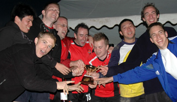
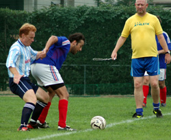
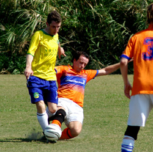

October 2005
AFC Victorious at Highland Games
Makuhari Sun 30th October. AFC silenced all the big guns when they fought their way to a well earned victory at the 23rd Highland games. Beating BFC 1-0 in the finals of the 7 a side 1066 cup, AFC finally got some silverware to put in their cabinet and incentive to fight their way up in Division 2. IThe Magellan Cup, 6 a side masters tornament was won for the 2nd year in a row by Vagabonds masters, beating the French masters in the final. more...
TML
Hart Hits Rocket to Fell BFC.
YC&AC Sat 29th October. The match up Saturday between YC&AC1 and BFC, both undefeated so far, was an early season test for both talented teams.
Play was spirited throughout as both teams' defenses came out strong and solid. Nothing further got past YCAC defenders, Damian Hart, Nicholas McDonald, Dickie Philo and Kevin Morgan, or the goalkeeping of Gary Hodgson. BFC's punishing defense was impenetrable too, led by experienced Leigh Manson, Ryo Yasunaga, and Dave Long and Jon Best. more...
Joe Takeda
Celts Squeeze Past YCAC 2nds.
YC&AC Sat 29th October. YCAC 2nds were once again edged out of the points with another 3-2 loss after their hard fought draw last week, Celts moved up the table as they finished their chances well and got their second victory in a row. more...
Blip Pilot
Hibs Push Further Ahead.
St Mary's Sat 29th October. The Tokyo hiberninan had not had a league game in 3 weeks and were wary of the tricky Jetro who had drawn with both the Hibs and Swiss last season. The match began well for the Hibs with Yama almost scoring within 10 seconds. Yohei Ohta then thumped one from outside the box that the Jetro keeper could only knock up into the net. A Tomo shot was deflected into the net by Keita and Yama made it 3-0 inside 20 minutes. The match then dropped down a gear as chances were spurned on both sides. The Hibs are happy to take the 3 points and move on to the next round against a revitalised BFC.
Bevan Colless
Stoneds Edge BEFC in Rain Soaked Thriller.
YC&AC Sat 29th October. A very wet and skiddy surface played host to a classic TML 2nd Division fixture on Saturday, with new boys Stoneds walking away with the points. The match started brightly enough for the BEFC boys, unlike the weather, as Kotaro, Silvano and Mike Yeomans tore the Stoneds defence apart on the left side of the park and should have been two or even three goals ahead after the first fifteen minutes. more...
Blip Pilot
BFC Save Best Til Last.
Hachioji Park, Saturday 22nd October. Under an October Manchester sky at the Hachioji ground, the pre-match kick in was going well. Shots predictably flying off target, mis-hit crosses, fluffed ball control, headers pinging off into space. Suddenly a ball swung in perfectly from Wiganer Neil to be headed firmly into the net by Evans. The man from Kenya was momentarily stunned, this was no ordinary ball, this ball had been pumped to the max and now had the feel of a heavyweight medicine ball. He dusted himself down, and got straight back to business. In a funny kind of way, this embodied the BFC never say die spirit today.. more from BFC...
Dave Long
Sala slumped to another TML defeat on Saturday, one which leaves them way down the table with only one point from three games.
Things started well enough, when after a turgid opening twenty minutes, Toby’s determination and skill in the middle of the park freed Dhugal through the middle. The Australian is not known to pass up one on ones with the keeper, and this was no exception, clipping the ball past him from 18 yards... more from Sala...
Roddy Charles
Shane Hold Off AFC With 1st Half Strikes.
Big Circus, Sunday 23rd October. A Sunday evening encounter in the Kanagawa mountains saw Shane seeing off a strong challenge from AFC. The only victory AFC recorded in the league last season was a 3-2 win over Shane which was still very much fresh in the memory as the Shane felt they threw away the 3 points in the last 5 minutes of that game.
With a full compliment of players to choose from this evening the stand-in Shane manager had an unusual selection headache, the usual one being filling 11 shirts with a linesman a bonus.. more...
PM
YC&AC Battle Past Knights.
YC&AC Sunday 23rd October. YCAC1 eased past a plucky Knights side in the Autumn sunshine at YCAC on Sunday Lunchtime. 3-0 down at HT, the Knights might have been forgiven for rolling over but to their credit they stepped up their running and tackiling and harried YCAC right up to the final whistle. A Genki Rasmussen header was the only addition to the scoring as the home team ran out 4-0 winners. more...
Steve Taw
YCAC 2nds Pick up First Point.
A beautiful day at YCAC, with Fuji-san looking splendid in the Autumn sunshine and temperature a balmy 20 degrees. There can't be a better place to play football when the weather is like that. YCAC were a little shorter of players than the email response had suggested, but still a good 13 or so. Nice to see Paul Wood and Tim Williams back. And always a pleasure to play in front of Peter Pauli in goal! more...
Steve McKie
Swiss Make Hard Work of KGFC.
YC&AC, Saturday 22nd October. The Swiss, still seeking to find some consistency in terms of line-up and playing style, came up against recently promoted but struggling KGFC. The game started slowly but KGFC showed off its skill in midfield by moving the ball around nicely from side to side, they had trouble getting by the Swiss back four and were limited to shots from distance which didn’t trouble Peter in goal. Coming back the other way, KGFC seemed to overload on attack and left themselves vulnerable to counter attack, willing to trust a great deal to their center back – supposedly of professional stock. KGFC did have the occasional corner as well but the clear height difference for the Swiss meant high balls did little to trouble the Swiss back 4. more...
Capn Kirk
Geckoes Overpower Resilient Jetro.
Hachioji Park, Saturday 22nd October. Wall Street Geckoes came away from Hachioji park with all three points, after a superb team performance over Japanese side Jetro. But by no means was it a one-team affair, as the Geckoes were forced to battle hard for victory against their skillful opponents. In the end though, it was the physically stronger team who would finish victorious. more...
PE
Jets Down Courageous Dutch.
Hachioji Park, Saturday 22nd October. The Saitama Jets eventually got past the brave Dutch resistance at Hachioji Park, notching up a 4-0 win.
The game, however, was not as easy as the scoreline suggests. At kick-off time, the Dutch had only managed to assemble 6 men. When the 7th arrived, the Jets lent the men in orange a spectator, so the game started 11 vs 8. Confident pre-match talk of scoring double figures soon proved premature, as a combination of stout Dutch defending and loose final passes and shots from the men from Saitama saw the first 30 minutes remain scoreless. It looked like it would take something a bit special to break the deadlock, so up stepped the Jets midfield motormouth Gary Garner. more from JETs...
G Garner
Swiss Breathe Sigh of Relief
Hachioji Park, Saturday 15th October. BFC and Swiss Kickers both lined up with under strength squads at Hachioji Park on Saturday, 15th October, due to injuries, illness and work commitments, however even on their worst days both teams have a veritable selection of quality players to choose from to do more than an average job.
On the back of two wins from two games and with the Swiss having been somewhat humiliated by Hibs in the weeks prior to this game, BFC were looking for a result from this fixture. Equally the Swiss were keen to get their season back on track and knew that a convincing win over BFC would go a long way to silencing their critics. more...
TML
Babas Come from Behind to Maintain 100% Record.
 |
|
John Stokes kneels before YC&AC2's Captain, Ryuji Matsumoto, though it was the latter who's side yeilded. |
YC&AC Saturday 15th October. Barbarians had started the 2005/06 campaign in an unusual style, with a win in the first game and were looking to retain their 100% record in glorious conditions on Sat afternoon at YCAC. Line up for the Barbs was Fred in goal, solid back line of Fergs, Seno, Hideki & Steve, 5 man midfield featuring Kaneko, Clark, John Stokes, Alex & Muramoto with Danny up front as the lone strike force. Hiro was our one sub who would come on for Kaneko mid way thru the first half.
more from Barbarians...
Richard Carden
Barbarians finally ran out 3-2 winners over YCAC 2nds in a good-natured but competitive game at Yokohama.
YCAC 2nds, in only their second season in the the TML, are looking to improve on their performances last year. more from YCAC2...
S. McKie
Jets Limp Past Spirited Wanderers.
Hachioji Park, Sunday 16th October. Saitama Jets keeper Fraser Gould went from villain to hero as the Jets laboured to a 3-1 victory over the AFC Wanderers.
The Jets had spanked the Wanderers 5-0 and 6-1 in the last two games between the teams, so were hoping for an easy win, but some gritty play from AFC and some profligate finishing by the Jets forwards made this a tight match. Gould gave the Wanderers an early present, and his team a handicap, swinging his boot wildly at a weak shot, missing, and watching the ball trickle painfully and slowly into his goal. more from JETs...
G Garner
A sodden Hachioji park pitch saw the perrinial underdogs AFC take on the in form and improving Saitama Jets. The two teams certainly know a bit about each other, hostilities, banter and the odd handshake were guaranteed.. more from AFC...
PM
YC&AC Show They Mean Business
|  |
|
The towering figure of Steve McKie watches as Phil Denham & Nacer Lahiani hold hands and practice their tango. |
YC&AC Saturday 15th October. YCAC1 finally kicked off its TML season with a convincing 3-0 win over an unusually subdued French side on saturday.
Having waited so long for the chance to play, the actual start was something of a damp squib for the YCAC boys. 4 dropouts midweek and scrounging for subs, a linesman and even a ref before KO deflates the preseason bubble just a little.
Ref Pietro again had trouble with his watch, 2 Half time arrivals and 1 overrun night game finishing in the dark in his last 3 YCAC games. Thanks to BigSteve Mckie for stepping up to ref the 1st 40 and ref very well too. The 57 Old Farts that run the League, for readers that recall Will Carling, might want to wake up to the obvious fact that todays Ref needs to be 6'4" 17 1/2 stone and conversant with modern man management techniques in dealing with player histrionics. "You're going to need to have this whistle surgically removed if you don't shut the f*** " is the blindingly obvious way to deal with someone whos in your face with "Excuse me for asking but how long to go, Ref?" more...
S. Taw
Hibs Take French from the Derrière
Big Circus Saturday 8th October. Another good game, very similar to the BFC v France game. France took an early lead against a very strong wind with a cracking shot from Julien Sepheriades that swerved and dipped over the keeper. France then looked fairly comfortable for the rest of the first half and all set for a half-time lead with the wind behind them in the second half. But Hibs sneaked one just before half time.
The wind was not as strong in the second half and neither side dominated, but Josh Shirmer scored a screamer from well outside the area after 15 min, then Keita Narama found himself one on one with the keeper with 5 minutes to go as France left a few gaps at the back pressing forward for the equaliser. more...
TML
Shane Brought Back to Earth by Babarians
|  |
|
Andrew Ferguson enjoys the chance to slide in on a grass pitch in Barbarians win over Shane FC . |
Misato Sunday 2nd October. Barbarians finally got their TML campaign off the ground in baking heat at Misato.
Shane came into the game on the back of handing out a 7-0 humping in their previous game while Barbs had been unable to play their previous 2 matches due to rain.
It was always going to be a close game with the 3 previous encounters between the 2 teams ending in a win a piece and a draw. more...
Ferg
Before the above match, Vagabonds were handed 3 points on a plate by Maritizio FC, who only managed to turn out 6 men for their match.
The players present went ahead with a games using borrowed bodies playing out a 2-1 win for Vagabonds.
Later in the day, BEFC started their return to Div 2 football with a fortunate 1-0 victory over WallStreet Clash. The Embassy held onto the lead after one of the Clash players shinned a clearance into his own net after only 15 minutes. Both sides came close in the 2nd half but it was to be the only goal of the game.
TML
France FC Topple Newcomers
 |
|
Taka fires in a 1st half shot at the KGFC goal, he scored the winner late in the 2nd half! |
Misato Sunday 2nd October. The French squad was on the turf on a bright and hot day in Misato facing off against the newly promoted KGFC. The first half saw a good Japanese opposition taking charge of the play. Very active on both wings, indeed it was from the left that the danger came - Ally parried the ball nicely, only for a KGFC player to recover the ball and stroke a nice shot home from 10-meters. 0-1 –Time for a break and a drink. We had the second half to get back in the game and show our true colours, which we did. A much more active and efficient French squad created some threatening chances. Aziz got the ball after a very nice pass and after a dribble, he beat the keeper from close range to score his debut goal for the French. 1-1. After a poor clearance from the KGFC defense, Taka received the ball and put it straight back in le mixeur (the mixer) the rebound caught the keeper by surprise and the French went 1-ahead. KGFC did thrust forward towards the end of the game, however the French squad held on to their lead with some fine saves by Ally and good all round work from Man of the Match – Taka. We did not play our best football on that hot day, but the result is what matters and we got an important second win to stay afloat in the league race.
Le FM
Hibs Keep Momentum Going.
St Mary's Saturday 1st October. The Hibs added another scalp to their early season collection as they accounted for The Wall Street Geckoes in a spirited encounter at St Mary's. The Geckoes were coming off a comprehensive win over the Shogun Knights and looked to have strengthened their squad over the summer, as the arrived with a big squad ready to play. more...
Bev